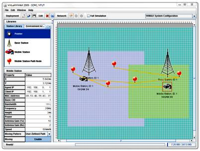
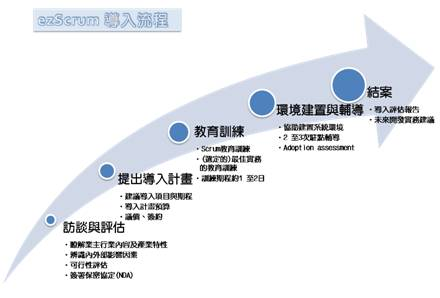

參與的老師：陳偉凱教授、楊士萱教授、林丁丙教授、林信標教授、劉玉蓀教授、李文達教授、鄭有進教授、柯開維教授、吳和庭教授、尤信程教授、劉傳銘教授、劉建宏教授
此計畫整合跨領域的知識，共同合作，建構出一套完整的WiMAX系統模擬軟體，完成移動式WiMAX網路(802.16e)、雙向、多點對多點服務的模擬系統。並在執行過程中導入CMMI ML2所要求的軟體開發流程，減少不同領域間共同開發的困難，使用的輔助工具也大大減少系統開發階段及系統整合階段所花費的時間。整個開發成果及相關經驗，能提供業界作為開發WiMAX相關產品的參考模型。目前這個計畫產出的軟體已經釋出3.0版，主要功能均開發完畢並進入維護階段。
當使用者想要模擬WiMAX網路時，首先透過主控台的使用者介面(圖一)，設定欲模擬的網路環境，包含地形(都市、市郊、山區等)、基地台的特性(Properties)、數量與距離、行動用戶端的特性、數量、移動速度及與基地台的距離等，然後啟動模擬。啟動時，主控台會先進行初始化的工作，依使用者指定的模擬環境，透過控制埠(Control Socket)送出命令，設定代理人應該扮演的角色(行動台、基地台或單層模擬)，待初始化完成後，行動台的應用程式便可以使用(虛擬)WiMAX網路環境。
下載程式原始碼：http://of.openfoundry.org/projects/837
參與的老師：楊士萱教授、吳和庭教授、劉玉蓀教授、陳偉凱教授、林丁丙教授梁文耀教授、劉建宏教授
本軟體為手持式行動數位電視DVB-H接收系統，針對Android平台的Layer架構，開發應用程式(Application)與元件(Library Component)，並希望本系統能在實際的DVB-H環境下獲得驗證，以做為國產嵌入式平台與Android軟體平台的核心技術與關鍵應用。軟體共包含2個部分：應用程式與元件，涵蓋DVB-H協定中資料解封裝、訊號源解碼、電子服務指南以及使用者介面等DVB-H接收機所必備之模組，並整合成一個完整的接收系統。
本軟體不但是第一個在Android平台上實現之DVB-H接收系統，在設計上以『不重新製作輪子』的理念，直接使用Android內建Media Player加以組合成DVB-H之播放器，如此，H.264之影音可直接使用硬體加速之優勢。元件採用Socket溝通，不需透過JNI (Java Native Interface)，因此可提供其他Android應用程式使用，或非Android應用程式使用。啟動軟體時，會開始進行頻道掃描(圖一)，接著會出現節目選單的畫面(圖二)，也可調整日期來查詢非當天的節目資訊(圖三)，點選要看的節目後進入播放的畫面(圖四)，在觀看節目的同時，可調整音量大小(圖五)，或是調整明亮度(圖六)。
本軟體開發功能完整之DVB-H接收系統，可以移植至Android手機或平板電腦(A-Pad)上，具商業價值。另美規的ATSC行動電視協定與DVB-H有蠻多地方相似，可在一個完整的通訊協定堆疊(Stack)中進行修改，建構ATSC協定之接收系統，為其本系統之應用價值。
下載程式原始碼：http://www.openfoundry.org/of/projects/1379/download
參與的老師：鄭有進教授、謝金雲教授、陳英一教授、陳偉凱教授、劉建宏教授
一個精簡的敏捷(agile)方法，主張以若干個固定長度期程(sprint)，進行開發工作，每ㄧ期程結束時需展示完成的功能。Scrum透過控管需求、投入資源，並持續檢視成果，使團隊的開發活動變得透明而可控。
提升軟體技術最直接的方法就是導入軟體最佳實務。所謂最佳實務其實就是軟體研發人員由長期工作經驗中所歸納出來的最佳工作方法，因此，在軟體開發團隊中引進最佳實務能有系統地提升其軟體開發與管理的技術。我們主推的最佳實務有八項，這些最佳實務都不是「研發中的技術」，而是國外多年的經驗，實證有效的方法。
本計劃所提供的服務
我們提供Scrum & Best Practices的導入及輔導諮詢
目前已經協助多家廠商進行Scrum與最佳實務的導入與開設相關的教育訓練課程，並且以Open Source的方式釋出了協助Scrum流程的工具ezScrum。 除此之外，為了促進交流也舉辦了Scrum & Best Practices系列講座，在2010年3月所舉辦的講座共有97人參加（150人報名)，當天與會廠商共約45家，10所大專院校系所參加。
數位電視與廣播是全球未來幾年製造與服務應用的明星產業，但由於數位電視與廣播屬於新興的資通訊產業，目前到未來數年有嚴重人才不足的問題。為提昇我國數位電視與廣播產業之競爭力，厚植研發技術人才以投入相關產業，配合教育部顧問室之「網路通訊科技人才培育先導型計畫」之定位，設立「數位電視與廣播教學推動聯盟中心」，培育數位電視與廣播產業正規教育之人才，以做為我國數位電視與廣播產業持續發展的基礎。
本計畫對於人才培育的規劃，將由產業需求的觀點，因應數位電視與廣播技術的推陳出新，更新現行之教材內容，提供學界目前較為欠缺的教材，以縮短教學內容與產業需求之落差，並開授數位電視與廣播實務課程，辦理各項推廣交流活動，提升相關專業人才的數量與素質。本計畫分課程教材發展、推廣交流活動、其他配套措施等三個面向，作為本聯盟中心規劃發展之方向。
在課程規劃與教材發展方面，共計編撰有16門的課程上課教材及其實習教材與題庫，加上前期計畫通訊科技人才培育先導型計畫相關的6門優良教材，構成本領域完整的教學資源，這些課程教材分屬於「資訊」、「通訊與訊號處理」、「電波傳播與通訊元件」三個專業領域。
在推廣交流活動方面，本中心在過去三年間辦理共計52次師資培育與成果推廣活動，藉由推廣活動培訓種子師資，已約有30個系所獲得課程補助，對於本領域的人才培育發揮一定的成效。
此外在其他配套措施方面，建立聯盟中心入口網站，做為中心訊息公告與交流，以及教材資源彙整與管理的資訊平台。同時持續利用計畫辦公室建立之題庫與線上檢測系統，由教材編撰教師及種子教師提供線上評量題目，再由授課教師自行上線施測，或由聯盟中心進行到校訪評，做為教材使用與學習成效評估的依據，建立教材、題庫、與學習成效評量間的雙向回饋機制，及教學與推廣成效的統計與彙整。
| 委託單位 | 計畫名稱 | |
|---|---|---|
| 100年 (100.8~迄今) |
經濟部 | 導入Scrum軟體流程與最佳實務於ICT/CE產品研發之三年計畫(第三年) |
| 泰琛科技股份有限公司 | 協助開發錄音筆計劃 | |
| 佳邦科技股份有限公司 | 車用多方向性圓極化接收天線設計 | |
| 台灣大哥大 | 載波聚合技術對行動通訊系統整體資料吞吐量之影響 | |
| 國防部軍備局中山科學研究院 | 廚衛浴環控網路整合設計與實現 | |
| 宏碁股份有限公司 | 智慧型資料庫安全規則系統之開發 | |
| 99年 (99.8~100.7) |
經濟部 | 導入Scrum軟體流程與最佳實務於ICT/CE產品研發之三年計畫(第二年) |
| 智新資通股份有限公司 | 軟體開發流程評估計畫 | |
| 宏基 | 智慧型資料庫安全規則系統之開發 | |
| 98年 (98.8~99.7) |
固緯電子 | 以異質多核心系統晶片為基礎的量測儀器系統韌體開發計畫 |
| 經濟部 | 導入Scrum軟體流程與最佳實務於ICT/CE產品研發之三年計畫(第一年) | |
| 中山科學院 | 短距無線感控網路佈建技術研究與實現 | |
| 其富國際 | 手機遊戲之開發與移植 | |
| 台灣大哥大 | 在基地台細胞邊緣之增進資料吞吐量的方法研究 | |
| 97年 (97.8~98.7) |
德鴻科技 | H.323 VoIP錄音監控系統之設計研究 |
| 固緯電子 | 協助開發電子量測儀器系統韌體計劃 | |
| Opticon Sensors Europe B.V. | 低功耗Android 系統設計與作業系統移植計畫 | |
| 順煜科技 | 數位電視頻帶晶片天線設計評估 | |
| 台灣大哥大 | 無線網路架構之整合與效能評估 | |
| 致伸科技 | 即時手勢辨識與物件追蹤 | |
| 優比線上 | 智慧型商用決策系統軟體平台之開發 | |
| 96年 (96.8~97.7) |
台灣大哥大 | WiMAX/HSPA無線接取技術之效能提升方案研究暨佈建軟體平台之開發 |
| 凌陽電通 | MIMO及OFDMA無線通訊傳輸技術之研究 | |
| 中山科學院 | 電子掃瞄陣列模組整合與系統校正研究研究 | |
| 電子掃瞄陣列系統架構及數位波束合成演算法研究 | ||
| 95年 (95.8~96.7) |
台灣大哥大 | 以定位為基礎之系統優化方案與異質網路整合平台之開發 |
| 無線寬頻擷取網路頻譜量測數據分析與探討 | ||
| 中山科學院 | 電子掃瞄陣列之收發模組研究 | |
| 順煜科技 | 可攜式數位電視天線與USB介面接收盒之整合設計 |